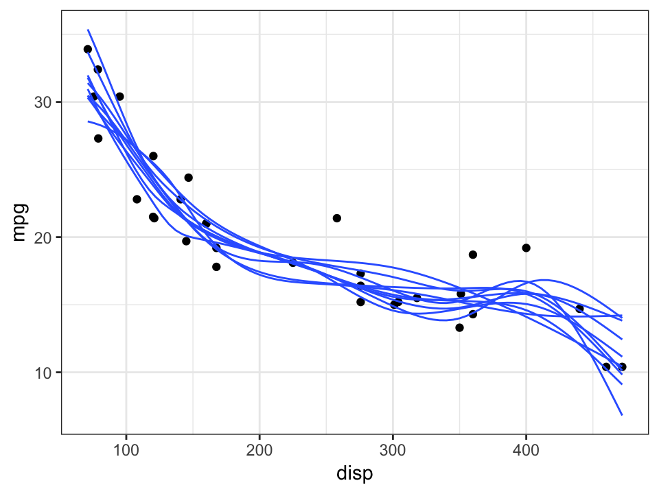
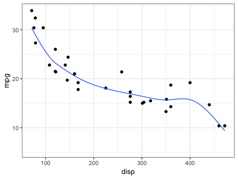
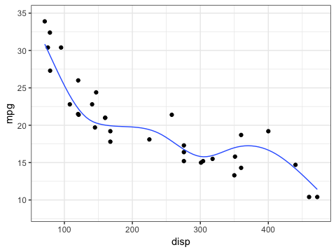
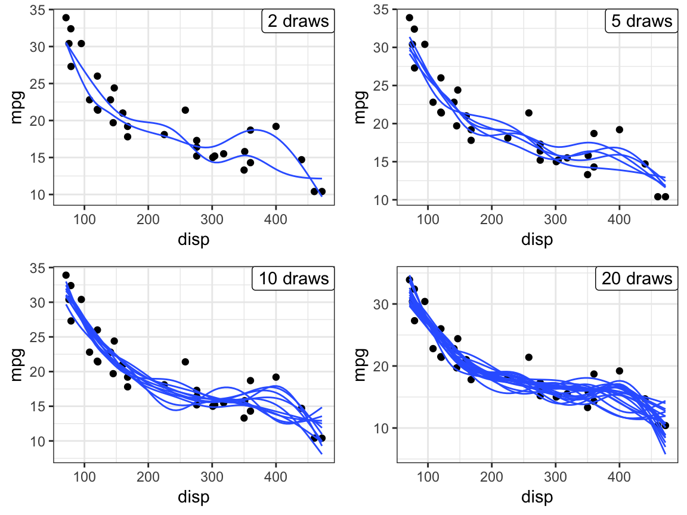
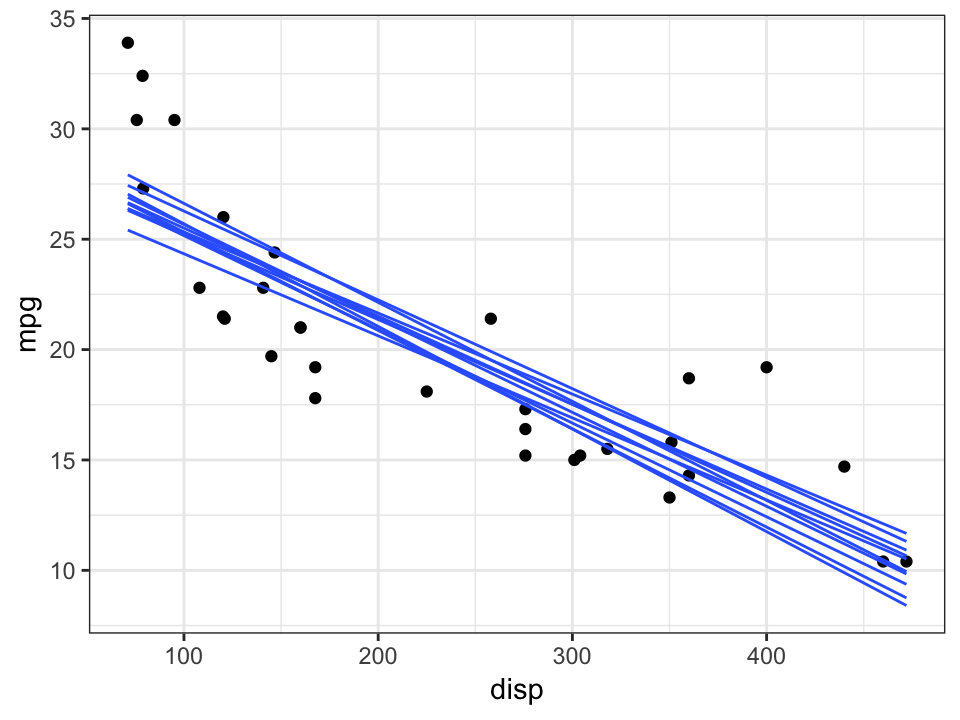
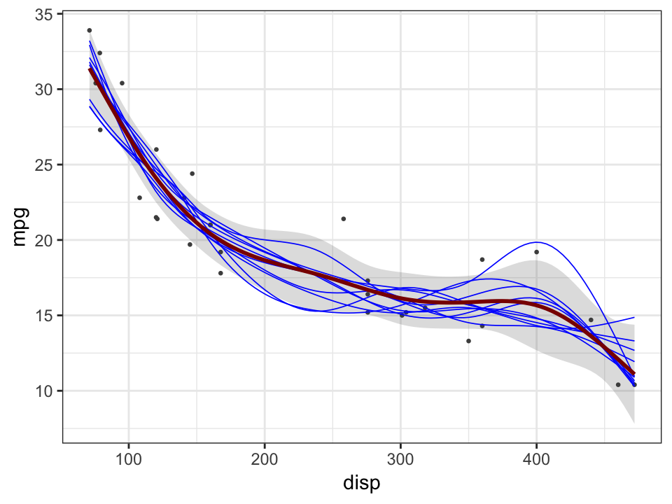
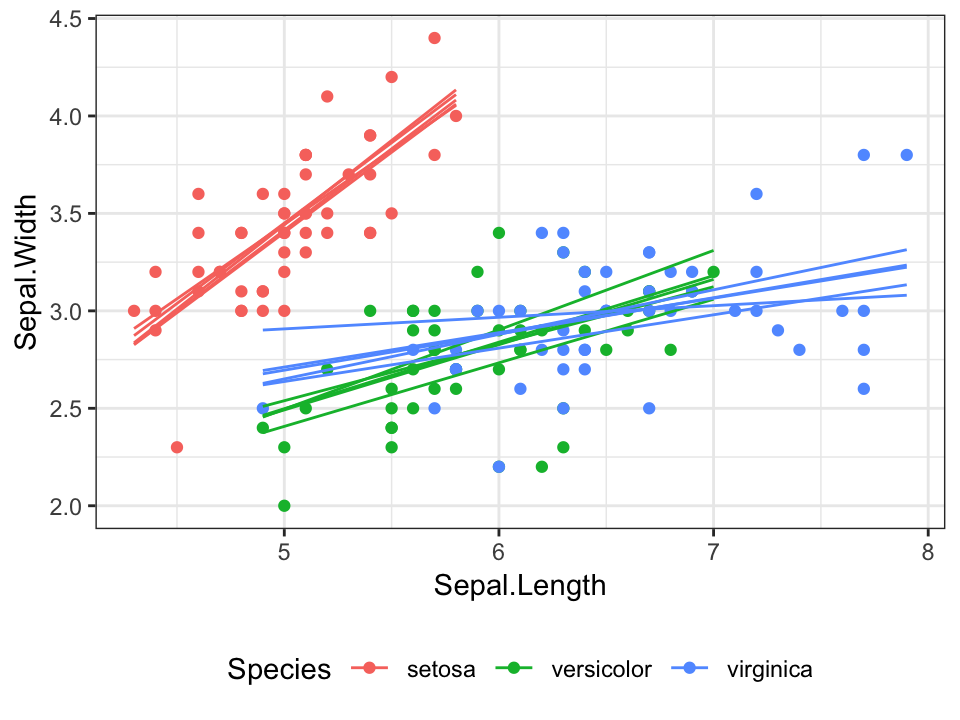

Posterior draws from a fitted model
Claus O. Wilke
2019-01-04
Source:vignettes/posterior-draws.Rmd
posterior-draws.RmdThe ungeviz package provides several functions to generate outcome draws from a fitted model. Specifically, the model has to be a generalized additive model (GAM) fitted with the mgcv package. This is a very broad class of models that includes linear models and generalized linear models as special cases.
The simplest way to generate these outcome draws is via stat_smooth_draws(), which works very similar to the regular stat_smooth(), with two important differences: it does not generate a confidence band, and it creates a new variable .draw that indicates distinct draws.
When we generate static plots, we need to use .draw to set the group aesthetic, usually via aes(group = stat(.draw)).
library(ggplot2)
library(ungeviz)
ggplot(mtcars, aes(disp, mpg)) +
geom_point() +
stat_smooth_draws(aes(group = stat(.draw)), size = 0.5) +
theme_bw()
When making a HOP animation, we don’t need to set the group aesthetic, because we are now transitioning animation frames based on the distinct draws. Note that we have to use stat(.draw) instead of just .draw as the argument to transition_states(). The .draw column is not present in the original dataset, it is autogenerated by stat_smooth_draws().
library(gganimate)
ggplot(mtcars, aes(disp, mpg)) +
geom_point() +
stat_smooth_draws(size = 0.5) +
theme_bw() +
transition_states(stat(.draw), 1, 2)
By default, gganimate will deform one smooth line until it looks like the next one. We may prefer to have the lines fade in and out, however. We can achieve this effect by setting the group aesthetic of stat_smooth_draws() to stat(.draw), so that gganimate sees the separate lines as distinct objects. We additionally add enter_fade() and exit_fade() to make the lines fade in and out.
ggplot(mtcars, aes(disp, mpg)) +
geom_point() +
stat_smooth_draws(size = 0.5, aes(group = stat(.draw))) +
theme_bw() +
transition_states(stat(.draw), 1, 2) +
enter_fade() + exit_fade()
The number of draws we generate is controlled by the times parameter of stat_smooth_draws().
library(purrr)
library(glue)
plist <- map(
c(2, 5, 10, 20),
~ ggplot(mtcars, aes(disp, mpg)) +
geom_point() +
stat_smooth_draws(
times = .x, # this line specifies the number of draws
aes(group = stat(.draw)), size = 0.5
) +
annotate(
"label", x = Inf, y = Inf, hjust = 1, vjust = 1,
label = glue("{.x} draws", size = 12/.pt)
) +
theme_bw()
)
cowplot::plot_grid(plotlist = plist)
If we want to generate linear fits instead of spline fits, we can set the formula argument to y ~ x.
ggplot(mtcars, aes(disp, mpg)) +
geom_point() +
stat_smooth_draws(aes(group = stat(.draw)), formula = y ~ x, size = 0.5) +
theme_bw()
Under the hood, posterior draws are implemented via the function sample_outcomes(), which can be used to generate a data frame with outcome samples. The accompanying function confidence_band() can be used to generate a confidence band as well as the best-fit line.
library(mgcv)
# GAM spline fit
fit <- gam(mpg ~ s(disp, bs= "cs"), data = mtcars, method = "REML")
newdata <- data.frame(
disp = seq(
min(mtcars$disp), max(mtcars$disp),
length.out = 100
)
)
sample_df <- sample_outcomes(fit, newdata, 10, unconditional = TRUE)
conf <- confidence_band(fit, newdata, unconditional = TRUE)
ggplot(mtcars, aes(disp, mpg)) +
geom_ribbon(data = conf, aes(ymin = lo, ymax = hi), fill="#80808040", color = NA) +
geom_point(color = "grey30", size = 0.5) +
geom_line(data = sample_df, aes(group = .draw), color = "blue", size = 0.3) +
geom_line(data = conf, size = 1, color = "darkred") +
theme_bw()
It can happen that we want to group both by draws and by some other variable, in case we want to generate draws for multiple different subsets of the data at the same time. We can do so with one caveat. We have to use the mapped version of the respective data column (e.g., map it to colour and then use colour on the right side of the aesthetic specification) because we’re creating the groups after after initial data mapping. We can use interaction() to combine different grouping variables, e.g. here stat(.draw) and colour.
ggplot(iris, aes(Sepal.Length, Sepal.Width, colour = Species)) +
geom_point() +
stat_smooth_draws(
times = 5,
formula = y ~ x,
aes(group = interaction(stat(.draw), colour)),
size = 0.5
) +
theme_bw() + theme(legend.position = "bottom")
In a direct comparison between posterior draws and bootstrapped fits, we see that both approaches result in similar results, though bootstraps tend to cover the outcome space less uniformly, with curves being either very similar to each other or quite different. This happens because in bootstrapping the influence of individual data points varies in discrete steps, from nothing (when a data point is dropped in a bootstrap) to several multiples (when a data point is chosen three or four times).
p1 <- ggplot(mtcars, aes(disp, mpg)) +
geom_point() +
stat_smooth_draws(times = 20, aes(group = stat(.draw)), size = 0.3) +
theme_bw() +
ggtitle("Posterior draws")
p2 <- ggplot(mtcars, aes(disp, mpg)) +
geom_point() +
geom_smooth(
data = bootstrapper(20), aes(group = .draw), size = 0.3,
# use identical fit parameters as in stat_smooth_draws()
method = "gam", formula = y ~ s(x, bs = "cs"), method.args = list(method = "REML"),
se = FALSE
) +
theme_bw() +
ggtitle("Bootstrap")
cowplot::plot_grid(p1, p2, ncol = 1)